Coconut Raspberry Lemon Cake

~ raw, vegan, gluten-free ~
Today, was a snow day. I was beginning to think that we had seen all the snow that we were going to see for this winter, but Mother Nature snuck in another glorious soft white day. I have to giggle at myself… I find myself always saying, “Rain day!
Time to play in the kitchen!”…. “Snow day! Time to play in the kitchen!”… “Beautiful Spring day and the birds are singing! Time to play in the kitchen!”… I don’t know about you, but I am sensing a pattern here. It doesn’t seem to really matter what the day is like outside; I am always inspired to play in the kitchen. hehe
Truthfully, I originally posted this recipe in March of 2011, but I have always wanted to redo the pictures of it because of my original cake, with its dripping red raspberry sauce, reminded me of a vampire cake. (shudders).
I just love the texture of this cake, and as you scroll through the ingredient list, you will most likely stop at the words, “9 cups of almond pulp”. I know, I know, that is a lot of almond pulp, but there is no getting around it. I don’t recommend replacing it with any other ingredient.
This cake is large (you need two 9” pans), tall (4” tall), extremely moist, and very light in texture. You can’t say that about many raw cakes, so that is why I don’t recommend changing a thing.
I cut a piece of cake for the photo down below and Bob asked if he could have it when I was done. I would never deny the man, so of course, I said yes. He did comment that it was far too large of a piece and only wanted part of it. After he took a few bites, he remarked how light it was, he seemed quite surprised. In the end… he ate the whole piece in one sitting. hehe
This cake batter is the closest I have come to creating a cake that is somewhat like the texture of a baked cake. Be prepared to fall in love. :)
This recipe was inspired by Sweet Gratitude cookbook.
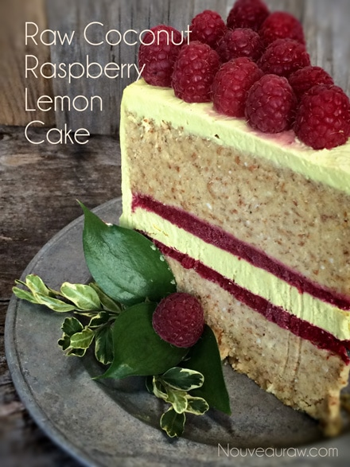
Ingredients:
9” cake (requires 2 pans)
Cake:
- 24 oz (weight) or (3 cups) date paste
- 3/4 cup coconut oil, melted
- 3 Tbsp vanilla extract
- 1 tsp sea salt
- 9 cups packed, moist almond pulp
- 1 cup lemon juice, fresh
- 1/2 cup dry coconut flakes, ground
- 3/4 tsp turmeric
Raspberry filling:
- 16 oz organic frozen raspberries, thawed
- 1 Tbsp chia seeds, ground
- pinch sea salt
Frosting:
- 2 cups cashews, soaked 2+ hours
- 1 1/4 cup coconut milk
- 4 Tbsp lemon juice, fresh
- 1/2 cup maple syrup
- 1 Tbsp vanilla extract
- 1 tsp turmeric
- 1/8 tsp sea salt
- 2 Tbsp sunflower lecithin powder
- 1 cup coconut oil, melted
Preparation:
Cake:
- In an electric mixer bowl combine the date paste, coconut oil, vanilla, and salt. Start the mixer out on a low-speed then increase speed to high. Creating a creamy and smooth consistency. You want to create a cake-like batter. Be careful to not over-process. If the mixture starts to become darker in color and has an oily look, you want to stop mixing and move on to the next step. Don’t worry, it isn’t ruined, it will taste just as good!
- Turn off the mixer and add the almond pulp, lemon juice, coconut powder, and turmeric. Mix for about 3-5 minutes or until everything is well incorporated. The batter should be light to the touch.
Raspberry filling:
- Place the raspberries, chia, and salt in the blender and blend until smooth. Set aside.
Frosting:
- After soaking the cashews, drain and discard the soak water.
- In a high-speed blender combine the cashews, coconut milk, lemon juice, maple syrup, vanilla, turmeric, and salt. Blend until creamy smooth. This can take 1-3 minutes depending on the machine.
- While your blender is running, drizzle in the coconut oil and then slowly add the lecithin. Blend well but don’t over-process.
- Place in the fridge to firm up. This can take 4+ hours.
Cake Assembly:
- Divide cake batter into two equal portions. Should be about 6 cups each. I used Springform pans for this cake.
- Lightly grease the cake pan with a little coconut oil.
- Place one portion of the batter on the bottom of the pan. Spread evenly creating a flat layer. Repeat with the other pan.
- Spread 1/2 of the raspberry filling on one of the cake batters. Place in the freezer until the raspberry filling is firm to the touch. Place the second cake layer in the freezer as well so it firms up for assemble.
- Pour about 2 1/2 cups of frosting on top of the firm raspberry filling.
- Spread out nice and even.
- Return to the freezer and chill until firm to the touch.
- Pour the remaining frosting into a container, and set in the freezer until firm (1-2 hours).
- Move to fridge once set, don’t allow it to get solid.
- Once the frosting is firm to the touch, pour the remaining raspberry filling over the frosting, speed evenly and you guessed it… return to the freezer until firm to the touch.
- Remove the cakes from the Springform pans and stack the single layer of cake on top of the other cake that has all the fillings in the center.
- Frost and decorate the cake to your liking.
- The cake will keep for about 3-5 days in the fridge or you can freeze leftovers for a few months.
Divide the batter in half and press evenly into Springform pans.
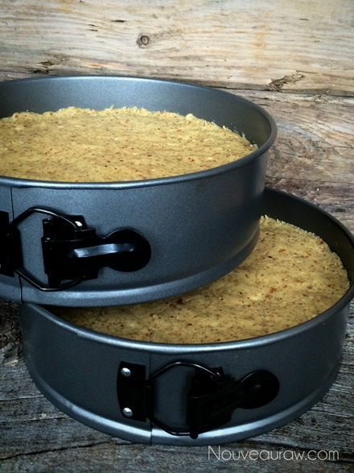
In one pan, pour half of the raspberry filling on top of the cake.
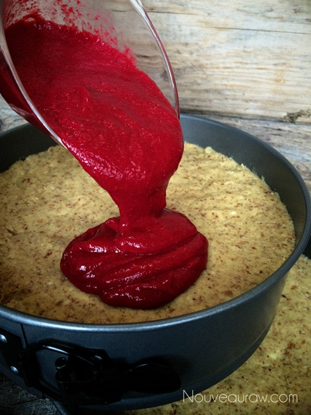
Spread it out evenly with an offset spatula.
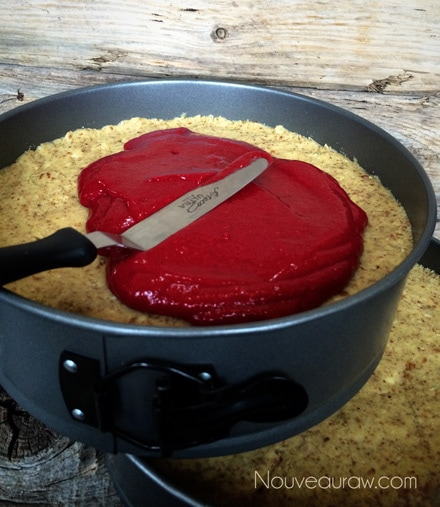
Place both pans in the freezer for the filling to firm up.
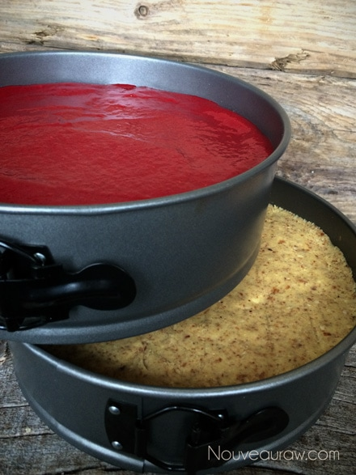
Remove the one pan with the raspberry filling when it is firm to touch.
Pour a layer of frosting on top. Spread with an off-set spatula.
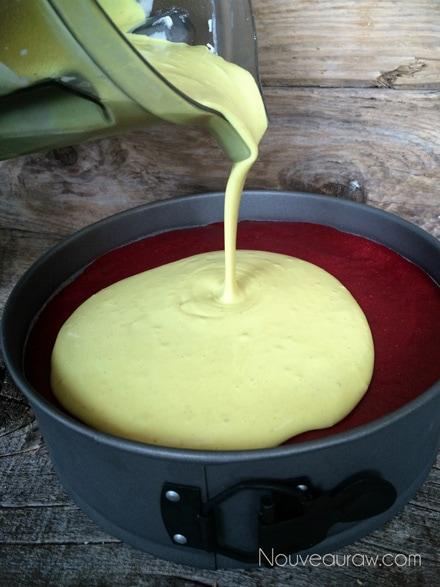
Lay a kitchen towel on the count and tap the pan on the counter, bringing
any air bubbles to the surface. Return to freezer to firm up.
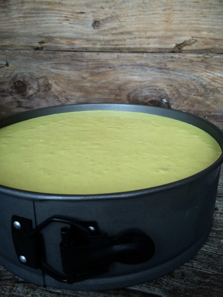
Remove from the freezer once firm the touch and pour the remaining
raspberry filling on top of the frosting.
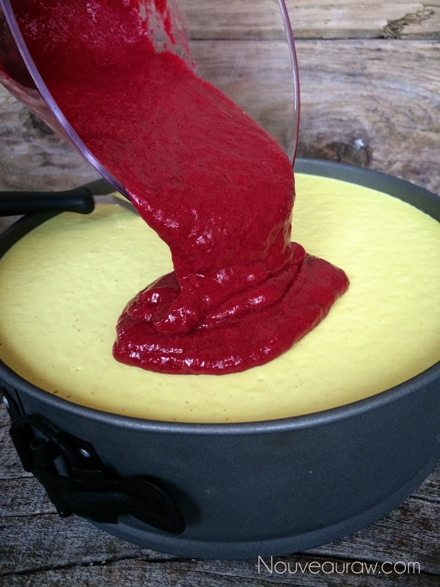
Once again, spread the filling out and place in the freezer to firm up.
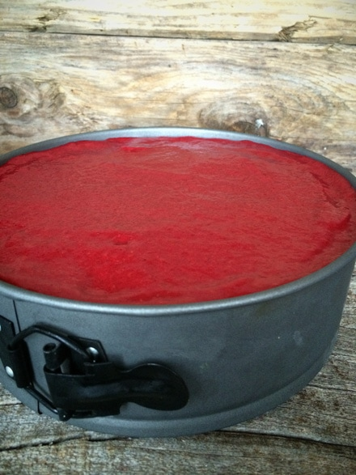
With both cake pans all firmed up from being in the freezer,
it is time to assemble the cake.
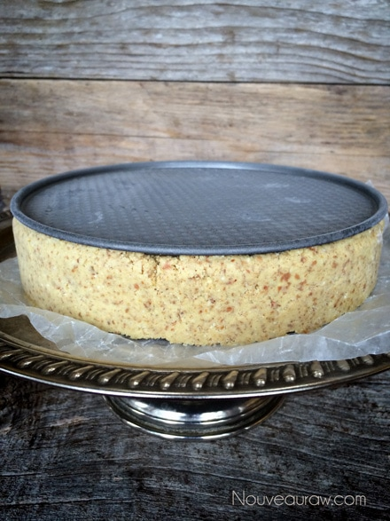
Remove the ring and base of the pan from the cake.
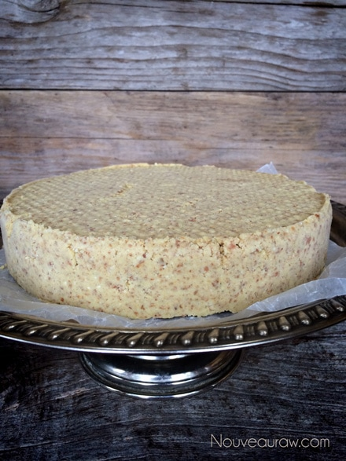
Stack the two cakes making sure the fillings end up in the center.
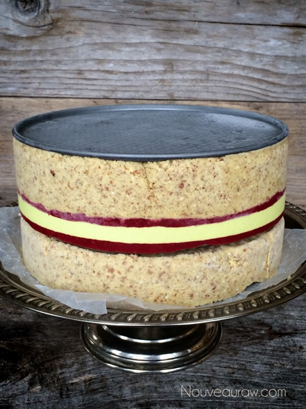
Slap down some frosting and start frosting. I like to do the sides first.
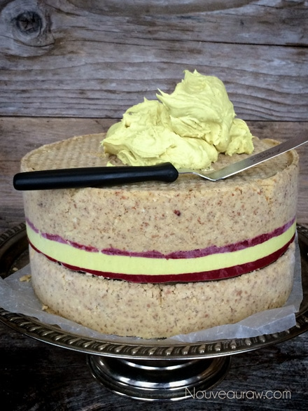
Because the cakes are cold, the frosting will stay nice and pliable for applying.
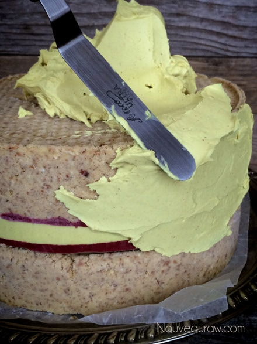
Ooops, I forgot to get a picture of the completely frosted cake before I started
to decorate it, but I think you understand what that looks like. :)
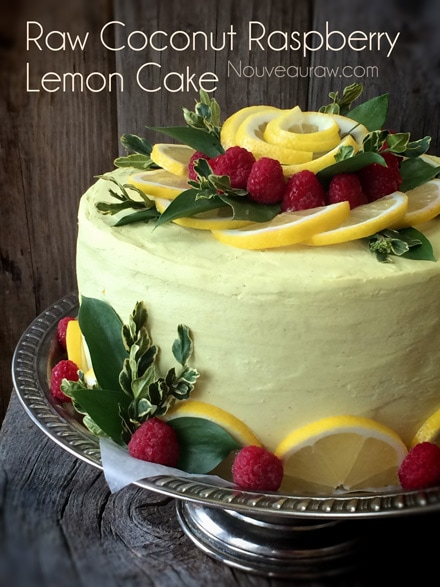
Enjoy!
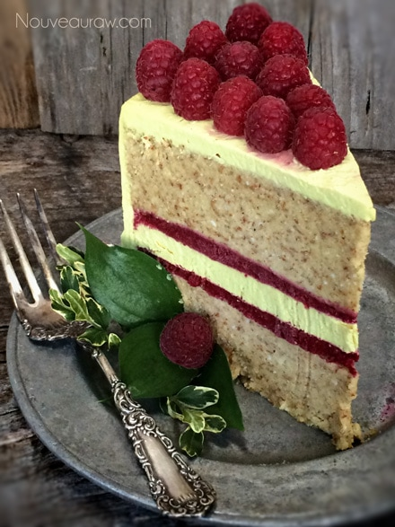
© AmieSue.com